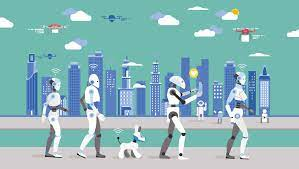

Artificial Intelligence
By 2050, AI will reach remarkable heights that will be beyond our imaginations. Robots will not only attain but also generate, that task in a cost-effective and timely, hence increasing efficiency. AI is influencing humans and many industries virtually. AI can mimic human behaviors and can compete with us human in every field possible. The question that arises is that "How will computers be used in the future?" Well...It is predicted that humans will be in a sleepwalking era where trillions of computers and machines will think like humans in AI's advanced future. A professor from the University of New South Wales, Walsh, wrote series of technology predictions for 2050 about AI in his book “Artificial Intelligence from the Logic Piano to Killer Robot."AI involvement will help doctors and physicians to offer personalized treatments to the patients. Well, there's a lot in store for us! Let's see what 2050 brings with it!

Go Back